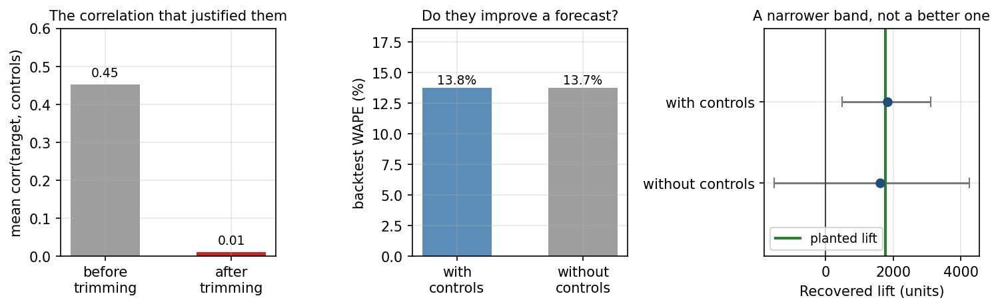

3.4 Causal Impact mit Zeitreihen
Über die deutsche Ausgabe
Diese Seite ist eine KI-Übersetzung der englischen Ausgabe von Marketing Science in Python. Die englische Ausgabe ist maßgeblich und hat bei Abweichungen Vorrang. Code, Notebooks und Text in Abbildungen bleiben auf Englisch. Englische Ausgabe lesen
Jedes Design im vorherigen Kapitel hatte eine Kontrollgruppe. Manche Filialen bekamen das Display und manche nicht. Ein Markt bekam die Kampagne und die anderen nicht. Dieses Kapitel ist für den Fall, dass es überhaupt keine Kontrollgruppe gibt.
Eine nationale TV-Kampagne lief acht Wochen. Der Umsatz stieg. Aber jeder Markt war exponiert, es gibt also keinen unbehandelten Markt zum Vergleich. Wie hoch wäre der Umsatz ohne die Kampagne gewesen?
Dieses Kapitel hat eine einzige Aufgabe: diesen fehlenden Pfad ohne Kampagne zu konstruieren und zu entscheiden, ob er glaubwürdig genug ist, um die Kampagne daran zu messen. Die Konstruktion braucht fünfzehn Zeilen Code. Die Entscheidung, ob man ihr trauen kann, füllt den Rest des Kapitels.
Das Kontrafaktum konstruieren
Kernidee: Prognostizieren Sie den Umsatz, den Sie ohne die Kampagne gesehen hätten. Der Effekt ist der beobachtete Umsatz minus dieser Prognose.
Ohne Kontrollgruppe muss der Vergleich aus der Zeit kommen. Passen Sie ein Zeitreihenmodell an den Umsatz vor der Kampagne an, damit die Kampagne nicht hineinsickern kann. Projizieren Sie das Modell über das Kampagnenfenster nach vorn. Diese Projektion ist das Kontrafaktum, und die Lücke zwischen ihr und dem, was tatsächlich passiert ist, ist der geschätzte Effekt.
Die Prognose kann trotzdem Kontrollreihen verwenden, und es lohnt sich klarzustellen, dass diese keine Kontrollgruppe sind. Eine Kontrollgruppe besteht aus unbehandelten Einheiten derselben Art: Filialen, die das Display nicht bekommen haben. Eine Kontrollreihe ist ein Prädiktor: jede Reihe, die die Kampagne nicht berührt haben kann, etwa ein Nachfrageindex der Kategorie oder eine Schwesterproduktlinie ohne Media. Sie wird nicht mit der Marke verglichen. Sie sagt der Prognose, was der Markt tat, während die Kampagne lief.
Die bekannteste Implementierung ist CausalImpact, das Google als R-Paket veröffentlicht hat und das Brodersen und Kollegen 2015 in einem Paper beschrieben haben. In der Literatur zur Kausalinferenz heißt dasselbe Design unterbrochene Zeitreihe (interrupted time series). Python-Portierungen existieren (tfp-causalimpact sowie InterruptedTimeSeries in CausalPy). Dieses Kapitel baut dieselbe Logik direkt mit statsmodels, damit jede Annahme sichtbar bleibt.
Es ist die letzte Sprosse der Leiter aus dem vorherigen Kapitel, und die Tabelle zeigt, was sich auf dem Weg nach oben geändert hat:
| Designmerkmal | DiD | Synthetische Kontrolle | CausalImpact |
|---|---|---|---|
| Benötigte unbehandelte Einheiten | Eine Kontrollgruppe | Ein Donor-Pool | Keine; Kontrollreihen sind Prädiktoren, keine Vergleiche |
| Der Vergleich kommt aus | Der Veränderung der Kontrollgruppe über die Zeit | Einer gewichteten Mischung des Donor-Pools | Einer Prognose aus der eigenen Vergangenheit der Reihe |
| Die Annahme, die Sie nicht testen können | Parallele Trends | Die Anpassung der Vorperiode hält weiter | Die Kontrollreihen blieben unberührt |
Das ausgearbeitete Beispiel ist eine nationale Konsumgütermarke (CPG): vier Jahre wöchentlicher Umsatz, eine achtwöchige TV- und PR-Kampagne und zwanzig Wochen Beobachtung danach. Zwei Kontrollreihen: ein Nachfrageindex der Subkategorie und eine Schwesterproduktlinie, die keine Media bekam. Die Daten sind synthetisch, der wahre Pfad ohne Kampagne ist also bekannt. Vor jedem Code das Briefing:
- Geschäftsfrage: Wie viel inkrementellen Umsatz hat die Kampagne erzeugt?
- Zielgröße: Wöchentlicher nationaler Umsatz.
- Treatment: Die achtwöchige TV-und-PR-Kampagne, gemessen als eine kombinierte Intervention.
- Estimand: Kumulierter inkrementeller Umsatz über die 28 Wochen nach dem Start, einschließlich Carryover und jeder späteren Rückzahlung.
Diese letzte Zeile ist eine Entscheidung, und sie wird jetzt getroffen, bevor jemand eine Zahl gesehen hat. Deshalb läuft die Prognose unten über 28 Wochen, und deshalb ist der Abschnitt zum Berichtsfenster später im Kapitel eine Prüfung und keine Wahl.

Hier ist der Code, der das Kontrafaktum konstruiert:
import numpy as np
from statsmodels.tsa.statespace.structural import UnobservedComponents
# 1. Fit on the PRE-period only. The campaign is deliberately absent.
model = UnobservedComponents(
np.log(y_pre),
level="lltrend", # level and slope
freq_seasonal=[{"period": 52, "harmonics": 2}], # annual shape
exog=np.log(x_pre), # untouched controls
)
res = model.fit(disp=0)
# 2. Simulate 1,000 no-campaign paths across the 28 post-period weeks
horizon, draws = len(y_post), 1000
paths = np.exp(
np.asarray(res.simulate(horizon, repetitions=draws, anchor="end",
exog=np.log(x_post))).reshape(horizon, draws)
)
# 3. Effect = observed minus counterfactual. The point estimate and the
# interval come from the same draws, so both summarize one distribution.
counterfactual = paths.mean(axis=1)
weekly_effect = y_post - counterfactual
cumulative = weekly_effect.sum()
lo, hi = np.percentile((y_post[:, None] - paths).sum(axis=0), [2.5, 97.5])Drei Entscheidungen in diesem Code zählen. Das Modell wird nur auf der Vorperiode angepasst, damit die Kampagne ihre eigene Baseline nicht kontaminieren kann. Der Umsatz wird in Logarithmen modelliert, weil ein Kampagnen-Lift und Saisonalität beide multiplikativ sind, und die simulierten Pfade werden in Dollar zurückgerechnet, bevor irgendetwas summiert wird. Und die Kontrollreihen gehen als Regressoren ein, damit die Prognose weiß, was der Markt während der Kampagne tat. Ob das Modell auch einen Trendterm braucht, oder die Kontrollreihen überhaupt, ist keine Geschmacksfrage. Der nächste Abschnitt klärt das durch Messung.
Das Kontrafaktum vor der Messung validieren
Dieser Schritt ist nicht optional. Der Effekt, den Sie berichten werden, ist beobachtet minus prognostiziert, also wird jeder Dollar Prognosefehler zu einem Dollar falschem Effekt. Bevor Sie die Prognose zur Messung der Kampagne verwenden, müssen Sie zeigen, dass sie eine Periode vorhersagen kann, in der nichts passiert ist. Drei Prüfungen leisten das, und alle drei laufen allein auf der Vorperiode.
Backtest der Prognose
Kann das Modell die unbehandelte Welt vorhersagen? Tun Sie so, als hätte die Kampagne an einem früheren Datum innerhalb der Vorperiode begonnen. Passen Sie das Modell auf den Daten vor diesem Datum an, prognostizieren Sie die nächsten achtundzwanzig Wochen und vergleichen Sie mit dem, was tatsächlich passiert ist. Wiederholen Sie das von mehreren Daten aus. Achtundzwanzig Wochen, weil das der Estimand im Briefing ist, und ein Modell, das über acht Wochen gut aussieht, kann über achtundzwanzig auseinanderfallen.
| Spezifikation | Prognosefehler | Verzerrung | Intervallabdeckung |
|---|---|---|---|
| Saisonal-naiv | 7.96% | -5.83% | n. v. |
| Niveau, ohne Kontrollreihen | 5.54% | -1.32% | 99.6% |
| Niveau + Kontrollreihen | 2.62% | -0.60% | 96.8% |
| Trend + Kontrollreihen | 2.43% | +0.48% | 87.7% |
Die Tabelle trifft die Entscheidung. Trend plus Kontrollreihen hat den niedrigsten Fehler und die kleinste Verzerrung, also ist das die Spezifikation, die wir verwenden. Zwei Details zählen unterwegs. Die Kontrollreihen halbieren den Fehler, auf diesen Daten verdienen sie sich ihren Platz also. Und der Trendterm zählt an diesem Horizont: Die Marke wächst schneller als ihre Subkategorie, und ein Modell ohne Steigung würde diese Lücke der Kampagne anrechnen.
Placebo-Interventionen
Erfindet das Design Effekte, wo nichts passiert ist? Wählen Sie ein Datum in der Vorperiode, sagen wir Woche 120, als es keine Kampagne gab. Tun Sie so, als hätte in dieser Woche eine begonnen, und führen Sie die vollständige Analyse durch. Die richtige Antwort ist null, also ist alles, was zurückkommt, das, was dieses Design aus Rauschen erzeugt. Das ist eine Placebo-Intervention, und die neun Backtest-Fenster oben dienen zugleich als neun Placebos. Der größte Placebo-Effekt hier war $636k, und eines der neun lieferte ein Intervall, das null ausschloss. Behalten Sie beide Zahlen. Die Kampagnenschätzung muss sie übertreffen.

Prüfen, dass die Kontrollreihen helfen
Verbessern die Kontrollreihen die Prognose tatsächlich? Der Backtest hat auf diesen Daten bereits Ja gesagt, und es lohnt sich zu sehen, was das einbringt. In einer ruhigen Welt verengen die Kontrollreihen das Intervall um den Faktor zwölf. Wenn ein kategorieweiter Einbruch drei Wochen der Kampagne trifft, landet die Schätzung mit Kontrollreihen innerhalb von 1.3% der Wahrheit, weil das Kontrafaktum mit dem Markt einbricht. Ohne Kontrollreihen wird derselbe Einbruch der Kampagne angerechnet, und die Schätzung landet 21% unter der Wahrheit. Das ist es, was eine gute Kontrollreihe tut: Sie absorbiert Schocks, die alle treffen, damit das Modell sie nicht mit der Kampagne verwechselt.
Das funktioniert nur, wenn die Kampagne die Kontrollreihe nicht berührt hat. Das ist die Annahme, die sich aus den Daten nicht testen lässt, und sie bekommt ihren eigenen Abschnitt, Wann Sie der Schätzung nicht trauen dürfen.
Den Kampagneneffekt schätzen
Erst jetzt wird das Kampagnenfenster verwendet. Die gewählte Spezifikation wird auf der vollständigen Vorperiode angepasst und nach vorn projiziert. Das Ergebnis ist das dreiteilige Diagramm, das zur Standarddarstellung einer einmaligen Kampagne geworden ist: beobachtet gegen kontrafaktisch, die wöchentliche Lücke und die laufende Summe.

Das Berichtsfenster wählen
Das Briefing hat den Estimand auf 28 Wochen festgelegt. Hier ist der Grund, warum das zählte. Schauen Sie auf das kumulierte Feld: Die Kurve steigt während des achtwöchigen Flights, steigt noch einige Wochen danach weiter, solange der Carryover läuft, und dreht dann nach unten, wenn vorgezogene Nachfrage zurückgezahlt wird. Drei Fenster, von denen jedes vernünftig klingt, liefern drei verschiedene Zahlen.
| Berichtsfenster | Schätzung | 95%-Intervall | Wahrer Wert | Fehler |
|---|---|---|---|---|
| Nur Flight, 8 Wochen | $1,157k | $844k bis $1,446k | $1,291k | -10.4% |
| Flight und Carryover, 12 Wochen | $1,603k | $1,174k bis $1,996k | $1,574k | +1.8% |
| Volles Nachfenster, 28 Wochen | $1,164k | $411k bis $1,890k | $1,124k | +3.6% |
Alle drei Schätzungen sind für das Fenster, das sie abdecken, genau. Nur die letzte beantwortet das Briefing, weil nur sie die Rückzahlung mitzählt. Wer bei Woche 12 stoppt, dem Gipfel der Kurve, überschätzt die vollständige Antwort um 38%. Das Modell war nicht falsch. Das Fenster war es. Deshalb gehört das Fenster ins Briefing, bevor jemand auf die Kurve schaut.
Wie sehr dem Intervall zu trauen ist
Das Band im Diagramm hält das angepasste Modell fest und trägt sein Rauschen nach vorn. Das macht es zu einer Untergrenze der wahren Unsicherheit, nicht zu ihrer Gesamtheit. Zwei Dinge helfen beim Lesen. Erstens die Placebo-Ergebnisse: Die Schätzung von $1,164k ist größer als jeder Placebo-Effekt, den dieses Design erzeugt hat, und der größte davon war $636k. Das ist eine nützlichere Aussage als ein p-Wert, weil sie in denselben Einheiten wie die Entscheidung vorliegt. Zweitens das Audit unten.
Das Notebook führt die gewählte Spezifikation auf zweihundert frischen synthetischen Datensätzen erneut aus und bewertet sie jedes Mal gegen die Wahrheit. Das nominale 95%-Intervall deckt die Wahrheit in 90% der Fälle ab. Ein echter Effekt wird in 60% der Fälle als signifikant erkannt. Wenn der wahre Effekt null ist, wird er in 9% der Fälle als signifikant bezeichnet. Das ist kein schwaches Modell. Es ist eine schwache Messsituation: eine behandelte Reihe, keine Randomisierung, ein Effekt, der neben dem Rauschen klein ist. Wenn die Entscheidung mehr braucht als das, führen Sie beim nächsten Mal ein Geo-Experiment durch (Kapitel 6.3).
Wann Sie der Schätzung nicht trauen dürfen
Drei Dinge brechen diese Analyse. Zwei davon hinterlassen keine Spur in den Daten.

Die Kampagne hat eine Kontrollreihe berührt
Je prädiktiver eine Kontrollreihe ist, desto wahrscheinlicher hat die Kampagne sie erreicht. Der Subkategorie-Index trägt den Großteil der Erklärungskraft des Modells, und genau deshalb ist eine nationale Kampagne für eine große Marke in dieser Subkategorie eine Bedrohung für ihn. Lassen Sie 35% des Marken-Lifts in den Index durchsickern, und die Schätzung behält nur 65% des wahren Effekts, mit einem Intervall, das null nicht mehr ausschließt. Eine Kampagne, die funktioniert hat, liest sich nun als nicht schlüssig. Und jede Diagnostik besteht: Die Anpassung der Vorperiode ist sauber, das Intervall ist eng, der Backtest sieht gleich aus. Die verletzte Annahme liegt außerhalb der Daten. Der einzige Weg, sie zu prüfen, ist, die Leute zu fragen, die die Kampagne durchgeführt haben, was sie berührt haben könnte.
Die Beziehung der Vorperiode ist gebrochen
Eine Beziehung, die vier Jahre gehalten hat, kann trotzdem aufhören. Angenommen, ein Wettbewerber tritt ein und lässt die Subkategorie in der Nachperiode um 5% wachsen, und diese Marke hat daran keinen Anteil. Die Kontrollreihen sagen nun, der Markt sei besser geworden, das Kontrafaktum steigt, und die Schätzung kommt mit minus $460k zurück, gegenüber einem wahren Effekt von plus $1,124k. Es ist das einzige Szenario im Kapitel, in dem die Wahrheit außerhalb des Intervalls liegt, und es ist per Konstruktion aus Daten der Vorperiode nicht testbar. Das ist dieselbe Disziplin, die DiD verlangt: Das Ergebnis ist nur so gut wie die Behauptung, dass sich die Kontrollreihen weiter so verhalten haben wie zuvor.
Die Prognose war nie gut genug
Der dritte Fehler hinterlässt eine Spur, wenn man hinsieht. Lassen Sie dieselbe Maschinerie auf echten Dunnhumby-Filialdaten laufen: Nehmen Sie die wöchentlichen Verkäufe einer Filiale, multiplizieren Sie die letzten zwölf Wochen mit 1.15 und versuchen Sie, den eingepflanzten Lift mit vier anderen Filialen als Kontrollreihen wiederzufinden.
Der Lift kommt zurück. Die eingepflanzten 1,775 Einheiten werden als 1,833 wiedergefunden, mit einem Intervall, das null ausschließt. Es wäre leicht, das als erfolgreiche kontrollierte Analyse aufzuschreiben.

Das ist sie nicht. Die Korrelation zwischen den Filialen, die die Kontrollreihen rechtfertigte, lag bei 0.45, aber das Dunnhumby-Panel beginnt klein und wächst, sodass alle Filialen aus Gründen gemeinsam steigen, die nichts mit Nachfrage zu tun haben. Schneiden Sie diese Anlaufphase ab, und die Korrelation fällt auf 0.01. Der Backtest entscheidet es: Das Hinzufügen der vier Kontrollfilialen bewegt den Prognosefehler von 13.7% auf 13.8%, das heißt gar nicht. Das engere Intervall ist die Falle. Zusätzliche Regressoren saugen Variation innerhalb der Stichprobe auf und verengen das Band, selbst wenn sich die Prognose nicht verbessert hat. Ein engeres Intervall ist kein Beleg dafür, dass die Kontrollreihen geholfen haben. Ein besserer Backtest ist es. Was die Zahl erzeugt hat, war eine Projektion des eigenen jüngsten Niveaus einer Filiale, und ein Prognosefehler von 13.7% ist zu schwach, um eine kausale Behauptung zu tragen. Das zu sagen ist der Befund.
Ein praktischer Arbeitsablauf
Das Kapitel verdichtet sich auf acht Schritte. Führen Sie sie der Reihe nach aus.
- Schreiben Sie das Briefing. Geschäftsfrage, Zielgröße, Treatment und der Estimand mit seinem Berichtsfenster. Legen Sie es fest, bevor Sie eine Zahl sehen.
- Wählen Sie die Kontrollreihen. Es müssen Reihen sein, die die Kampagne nicht berührt haben kann. Fragen Sie die Leute, die sie durchgeführt haben.
- Passen Sie nur auf der Vorperiode an.
- Backtesten Sie das Kontrafaktum an dem Horizont, den Sie berichten werden. Wählen Sie die Spezifikation nach dem Backtest, nicht nach Geschmack.
- Führen Sie Placebo-Interventionen durch. Wissen Sie, was das Design aus Rauschen liefert, bevor Sie die echte Zahl lesen.
- Schätzen Sie den Effekt der Nachperiode über das Fenster, das Sie in Schritt 1 festgelegt haben.
- Unterziehen Sie die Kontrollreihen einem Stresstest. Könnte die Kampagne sie erreicht haben? Könnte die Beziehung der Vorperiode gebrochen sein?
- Wenn das Kontrafaktum schwach ist, berichten Sie keine kausale Zahl. Ein Backtest-Fehler von 13.7% ist eine Prognose, keine Messung.
CausalImpact verwandelt Beobachtungsdaten nicht in ein Experiment. Es gibt Ihnen einen strukturierten Weg zu fragen, ob eine Zeitreihe ein glaubwürdiges Kontrafaktum tragen kann. Wenn sie es nicht kann, ist die Antwort kein besseres Modell. Es ist ein besseres Experiment beim nächsten Mal (Kapitel 6.3).
Begleit-Notebook: sec3.4_causal_impact.ipynb konstruiert das Kontrafaktum, validiert es an Placebo-Daten, auditiert sein Intervall über zweihundert Ziehungen und bricht es dann absichtlich.
Auf GitHub ansehen
Das Wichtigste in Kürze
- Ohne Kontrollgruppe prognostizieren Sie den Pfad ohne Kampagne aus der Vorperiode und aus Reihen, die die Kampagne nicht berühren konnte, und verdienen sich diese Prognose dann mit Backtests an dem Horizont, den Sie berichten werden.
- Zwei Fehler hinterlassen keine Spur in den Daten: eine Kontrollreihe, die die Kampagne erreicht hat, und eine Beziehung der Vorperiode, die gebrochen ist. Ein engeres Intervall ist kein Beleg dafür, dass die Kontrollreihen geholfen haben; ein besserer Backtest ist es.
- Legen Sie das Berichtsfenster fest, bevor Sie eine Zahl sehen. Am Gipfel der kumulierten Kurve zu stoppen hat die Antwort für das volle Fenster um 38% überschätzt.